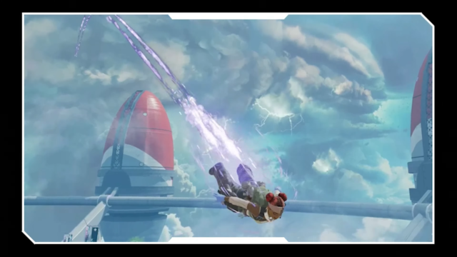
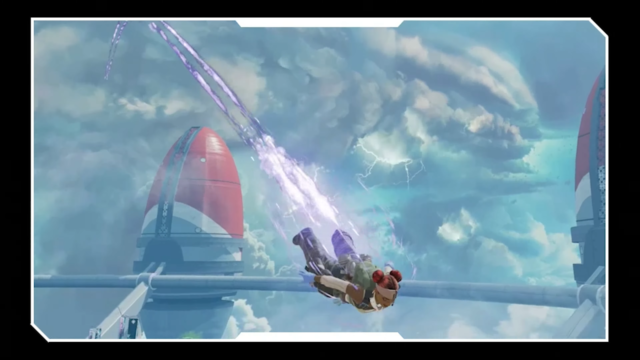

ダイブ起動とは？入手方法と変更点まとめ
投稿日：2025年6月11日
「ダイブ起動」は、試合開始時にスカイダイブ中に表示される特別なエフェクトのこと。特定のイベントやシーズンバトルパスで入手可能です。
今シーズンでは新たな起動エフェクトが追加され、レジェンドごとに異なる演出が用意されています。中でもレイスとオクタンの新エフェクトが特に人気です。
シーズン終了後には一部の起動が復刻される可能性もあるため、見逃さないように注意しましょう。
投稿日：2025年6月11日
「ダイブ起動」は、試合開始時にスカイダイブ中に表示される特別なエフェクトのこと。特定のイベントやシーズンバトルパスで入手可能です。
今シーズンでは新たな起動エフェクトが追加され、レジェンドごとに異なる演出が用意されています。中でもレイスとオクタンの新エフェクトが特に人気です。
シーズン終了後には一部の起動が復刻される可能性もあるため、見逃さないように注意しましょう。